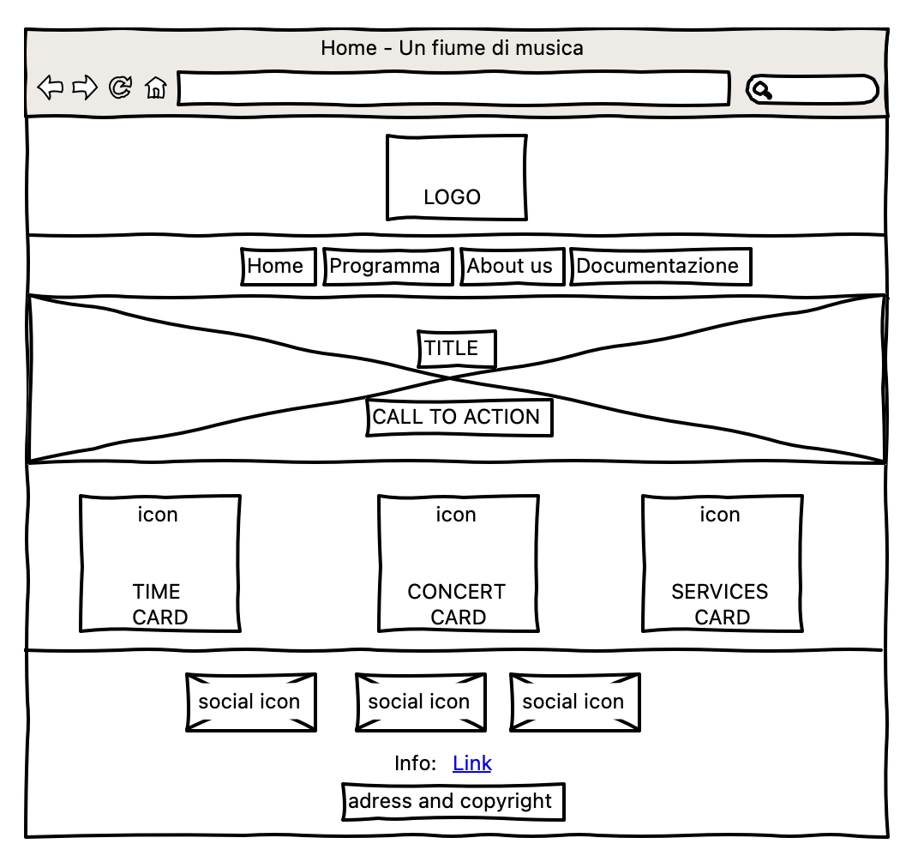
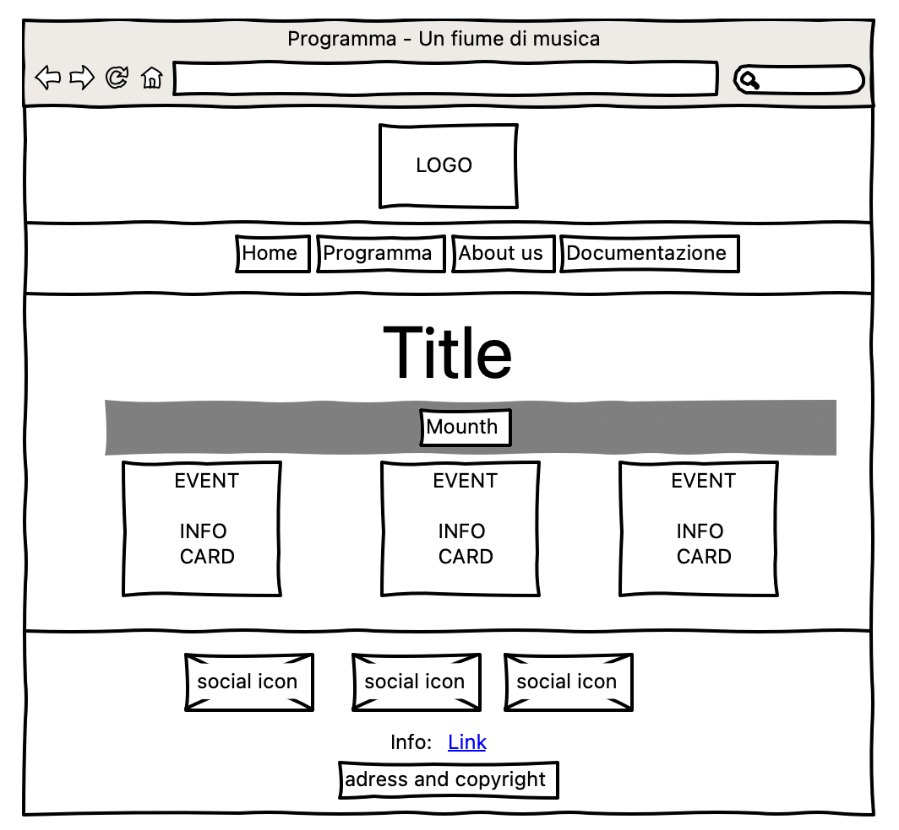
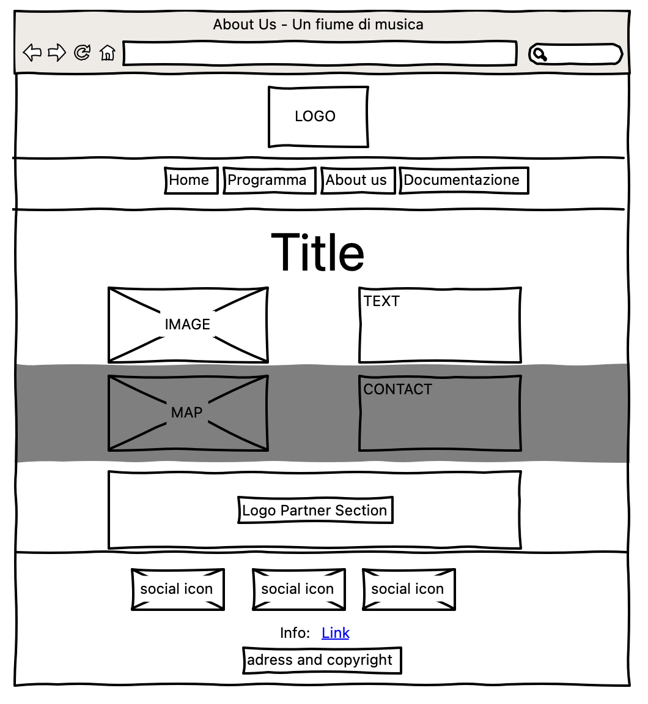
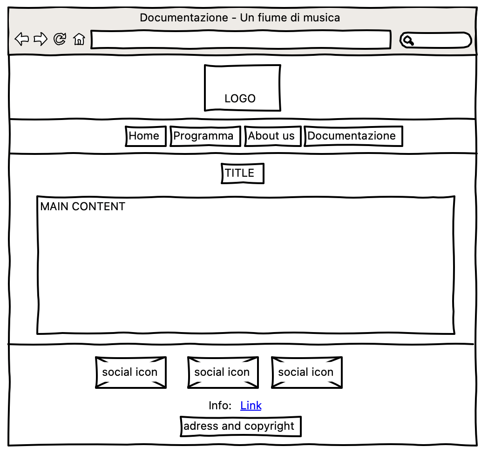

Questo progetto prevede lo sviluppo di un sito web per la manifestazione "Un fiume di musica" nato con l'obiettivo di fornire un punto di riferimento unico e indipendente per accedere a tutte le informazioni sulla programmazione dell'evento. Questo sito web raccoglie in un unico luogo le informazioni relative agli artisti, alle date e ai servizi delle esibizioni, in modo da rendere facile e immediato l'accesso alle informazioni per tutti coloro che vogliono partecipare. L’obiettivo è di raggiungere tramite web un pubblico di over 30 esterno all’associazione musicisti di Ferrara - APS che ne è organizzatore e promotore.
Il piano di gestione del progetto prevede l'utilizzo di una metodologia Agile per lo sviluppo del sito web. Ci saranno sprint settimanali per monitorare il progresso del progetto e garantire che si mantenga allineato con gli obiettivi del cliente. Il team di sviluppo utilizzerà GitHub per la gestione del codice sorgente e delle versioni del progetto.
1. Obiettivi: Il sito web "Un fiume di musica" mira ad essere una vetrina completa e ordinata di tutti gli eventi e servizi offerti dalla manifestazione con attenzione rivolta all'obiettivo di solidarietà poposto per quest'edizione.
2. Target utente: Il target principale sono gli appassionati di musica over 30.
3. Competitors:
Ferrara Buskers Festival: Il sito web di Ferrara Buskers Festival è ben strutturato e accattivante. La homepage presenta un'immagine di sfondo che richiama l'atmosfera del festival e un menu principale che permette di accedere a tutte le sezioni del sito. Sono presenti informazioni dettagliate sulla storia del festival, sul programma, sulle location e sui musicisti partecipanti. È possibile acquistare i biglietti online e consultare le news e le foto delle edizioni passate. Il sito presenta anche una sezione dedicata agli sponsor e ai media partner. Inoltre, è presente una sezione "Buskers for Future" che illustra le iniziative dell'organizzazione per la tutela dell’ambiente.
Ferrara Summer Festival: Il sito web di Ferrara Summer Festival è molto colorato e animato, ma la struttura potrebbe essere migliorata. La homepage presenta un menù principale che permette di accedere alle diverse sezioni del sito, ma le informazioni sono sparse e poco organizzate. Sono presenti informazioni sul programma, sugli artisti partecipanti e sui luoghi del festival, ma manca una sezione dedicata all'acquisto dei biglietti e alle modalità di accesso. Il sito presenta anche una sezione dedicata agli sponsor e ai media partner, ma non ci sono informazioni sulle iniziative dell'organizzazione per la tutela dell'ambiente o per la responsabilità sociale.
a. Architettura del sito:
b. Wireframe:
Home:
Programma:
About us:
Documentazione:
Look and Feel:
Il font utilizzato è Inter scelto per la semplicità e la pulizia.
La palette colori richiama lo stile comunicativo della manifestazione - il verde - e l'arancione per richiamare i colori dell'associazione orgaizzatrice
HTML, CSS, Javascript, bootstrap per la grafica responsive, font awesome per le icone, github per la pubblicazione e google font.